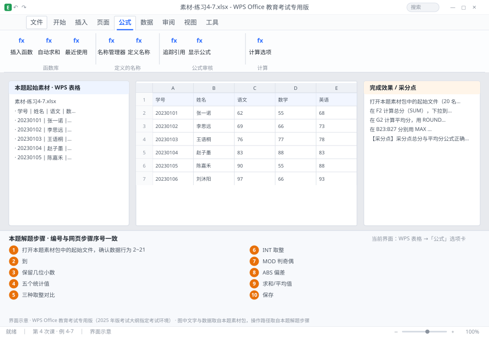

完成比对文档 · 例 4-7
统计 6 件套 + 4 种取整 + MOD 判奇偶 + ABS 算偏差 ｜ 第 4 次课 / WPS 表格 ｜ 网页：实操-表格1.html ｜ 考试环境：WPS Office 教育考试专用版（2025 年版考试大纲指定考试环境）
用途 本页按修订后的题目要求与解题步骤生成，是交卷自查的结果基准：
逐项列出每一步应出现的可复核结果，配合模拟操作截图与解题结果文件使用。
它不是素材包的一部分，不会预置答案动作；起始素材仍从本题素材包下载。
一、本题起始素材包
目录：练习素材/练习4-7-统计与取整函数/ ｜
下载包：练习素材/下载/练习4-7-统计与取整函数.zip
二、题目要求
- 打开本题素材包中的起始文件（20 名学生，B 列语文、C 列数学、D 列英语）。
- 在 F2 计算总分（SUM），下拉到 F21。
- 在 G2 计算平均分，用 ROUND 保留 1 位小数，下拉。
- 在 B23:B27 分别用 MAX / MIN / AVERAGE / COUNT / COUNTA 计算最高分、最低分、全体平均、数值个数、非空个数。
- 在 H2:H4 分别用 ROUND / ROUNDUP / ROUNDDOWN 对 85.678 保留 1 位，对比结果。
- 在 I2 用 INT 取整、J2 用 MOD 判断行号奇偶（偶数返回「双」、奇数返回「单」）。
- 在 K2 用 ABS 计算该生总分与全体平均总分的偏差绝对值。
- 保存为 学号-姓名-练习4-7.xlsx。
三、解题步骤（编号与下方核对表、截图编号一致）
- 打开本题素材包中的起始文件，确认数据行为 2~21。
- 总分。F2 输入 =SUM(B2:D2) → Enter → 拖填充柄到 F21。B2:D2 是区域写法（冒号表示「到」），等价于 B2+C2+D2。
- 平均分并取整。G2 输入 =ROUND(AVERAGE(B2:D2),1) → 下拉到 G21。ROUND 的第二个参数是「保留几位小数」，1 表示四舍五入到 0.1。
- 五个统计值。B23 =MAX(F2:F21)；B24 =MIN(F2:F21)；B25 =AVERAGE(F2:F21)；B26 =COUNT(F2:F21)（只数数值）；B27 =COUNTA(A2:A21)（数非空，含文本）。
- 三种取整对比。H2 =ROUND(85.678,1) → 85.7；H3 =ROUNDUP(85.678,1) → 85.7（向上进位，若为 85.61 则得 85.7）；H4 =ROUNDDOWN(85.678,1) → 85.6（截断）。再试 =ROUNDUP(85.601,1) 与 =ROUNDDOWN(85.699,1) 才能看出三者差别。
- INT 取整。I2 输入 =INT(G2) → 结果为整数部分（向下取整，负数时与 TRUNC 不同）。
- MOD 判奇偶。J2 输入 =IF(MOD(ROW(),2)=0,"双","单") → 下拉。ROW() 取当前行号，MOD(行号,2) 为 0 即偶数行。
- ABS 偏差。K2 输入 =ABS(F2-$B$25) → 下拉到 K21。这里用 $B$25 锁定全体平均，下拉时才不会跑偏。
- 检查。选中 F 列看状态栏「求和/平均值」，与 F23/F25 对照是否一致。
- 保存。Ctrl+S。
四、完成效果 / 采分点
采分点总分与平均分公式正确且下拉到 21 行 · 平均分用 ROUND 保留 1 位 · 5 个统计值（MAX/MIN/AVERAGE/COUNT/COUNTA）分别正确 · 三种取整结果可区分 · INT 与 MOD 用法正确 · ABS 偏差使用绝对引用
五、逐项完成核对表
| 步骤 | 关键操作路径 | 应出现的结果（可复核） |
|---|
| 1 | 打开本题素材包中的起始文件，确认数据行为 2~21 | 打开本题素材包中的起始文件，确认数据行为 2~21 |
| 2 | 总分 | F2、=SUM(、B2:D2、F21、「到」 |
| 3 | 平均分并取整 | G2、=ROUND(、B2:D2、G21、「保留几位小数」 |
| 4 | 五个统计值 | B23、=MAX(、F2:F21、B24、=MIN( |
| 5 | 三种取整对比 | H2、=ROUND(、H3、=ROUNDUP(、H4 |
| 6 | INT 取整 | I2、=INT(、G2 |
| 7 | MOD 判奇偶 | J2、=IF( |
| 8 | ABS 偏差 | K2、=ABS(、F2、K21 |
| 9 | 检查 | 「求和/平均值」、F23、F25 |
| 10 | 保存 | 保存 |
六、模拟操作截图

界面示意 · WPS Office 教育考试专用版 · 橙色编号与本题解题步骤序号一致；
图中文字与数据取自本题素材包，功能入口取自本题解题步骤。
核对方法：按网页解题步骤完成并另存自己的成稿后，逐行比对本表第 3 列的
参数、公式、区域、文件名与对象数量；再对照网页「完成效果 / 采分点」检查版式是否一致。